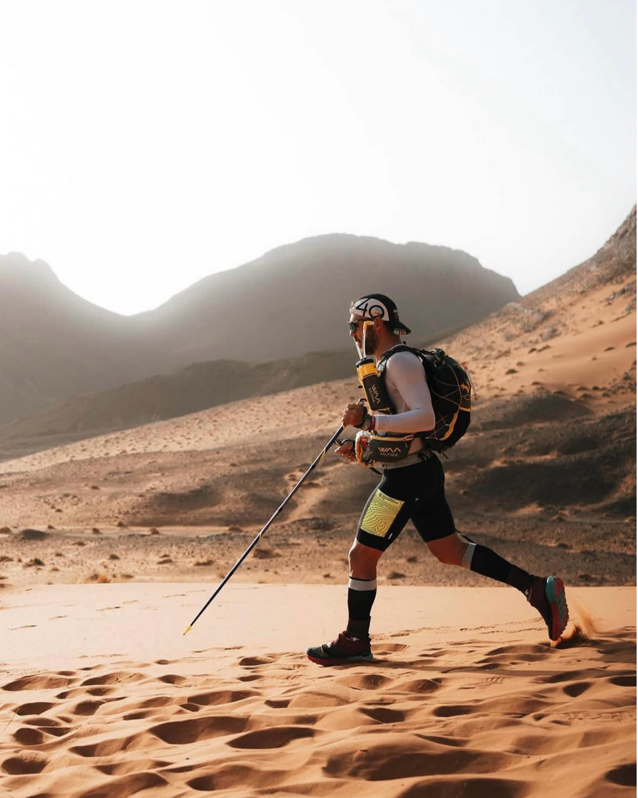
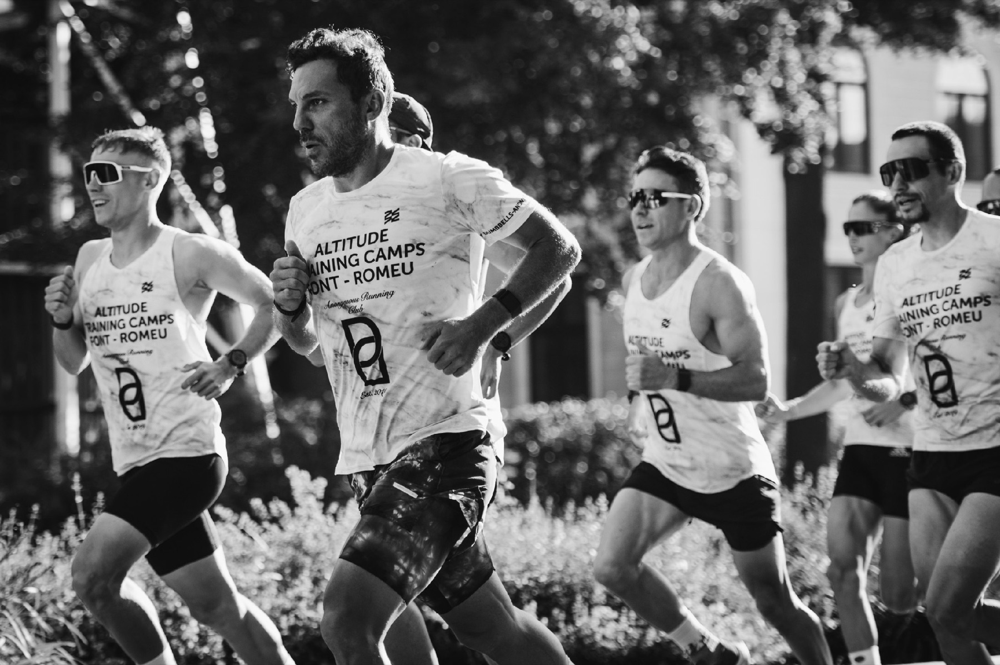
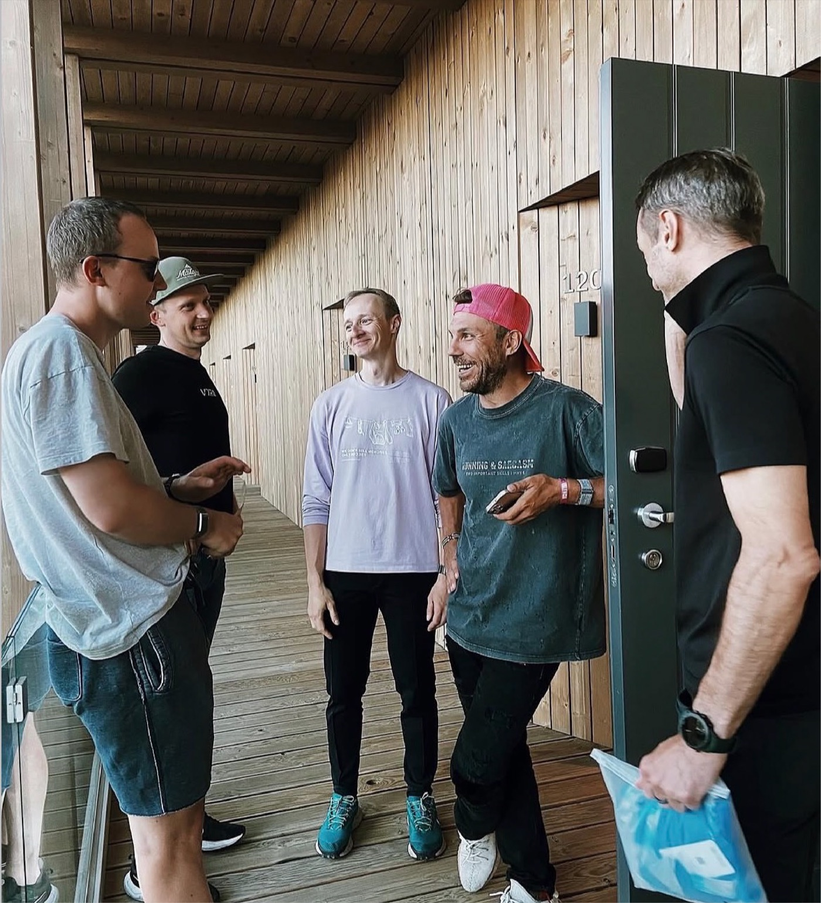

swimming
100 km
- 2,000 lengths of a 50-metre pool
- the equivalent of three English Channel crossings
- Moscow to Yaroslavl without a break in the water

The world’s first 31-day ultra-triathlon.
Project goal
11,111 km is not a stunt. It is the next scale of a model that already works: an extreme distance, an honest protagonist, and a story worth following to the end.
One project · three disciplines
Thirty-one days in succession. These figures are not decoration — each one translates into a scale people can understand.
100 km
10,010 km
1,001 km
Total over 31 days

Who is Viktor
47. He does not build an image —
he lives it.
A driving force behind the Dusty Dumbbells and Gastrodinamika communities, a friend, a motivator, and one of Russia’s strongest amateur triathletes.
He does not sell a story.
He lives it.


We have done it before
The audience embraces long-form stories. Honesty outperforms gloss. The project lives on after the finish.
Watch the film about Project “1111” Opens VK in a new tabNot his first limit
For partners
Let’s build it together.
We will find a meaningful role for your brand in a major human story — without artificial gloss or token integrations.
Ways to participate
The product becomes part of the daily distance and is shown honestly at work.
Data, connectivity and monitoring make all 31 days legible to the audience.
We tell the story together before the start, throughout the project and after the finish.
Track record
Contacts
Anna Nesterova Send an email Message on Telegram